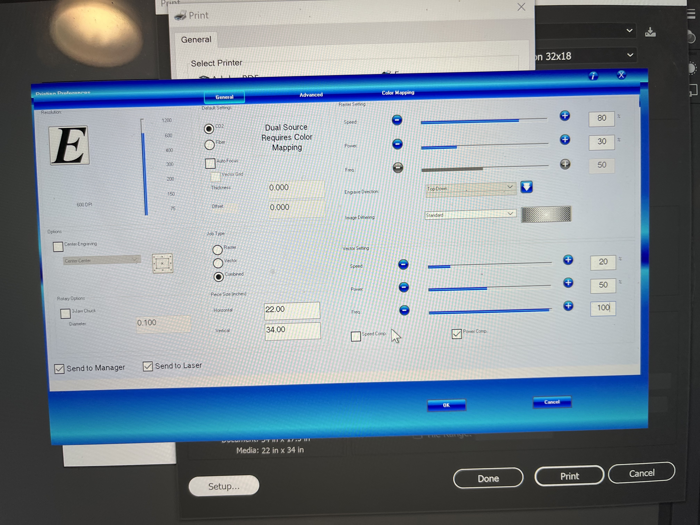
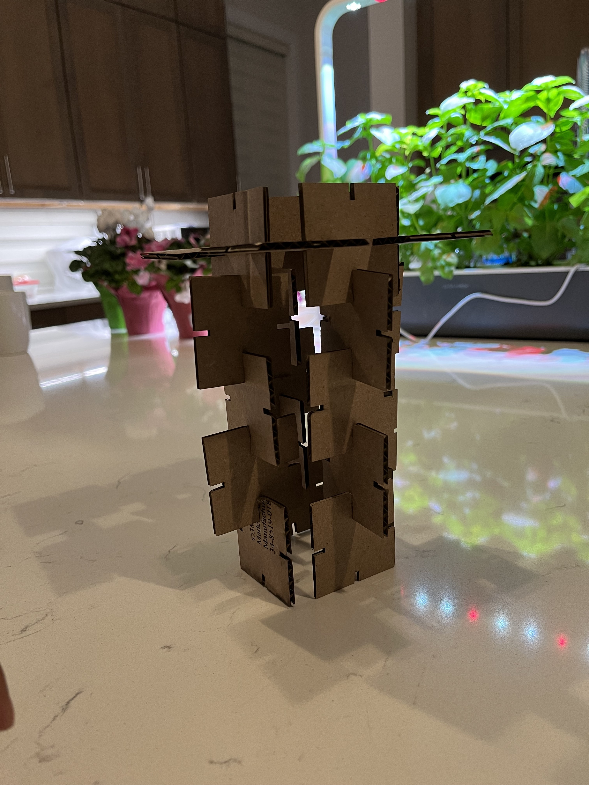
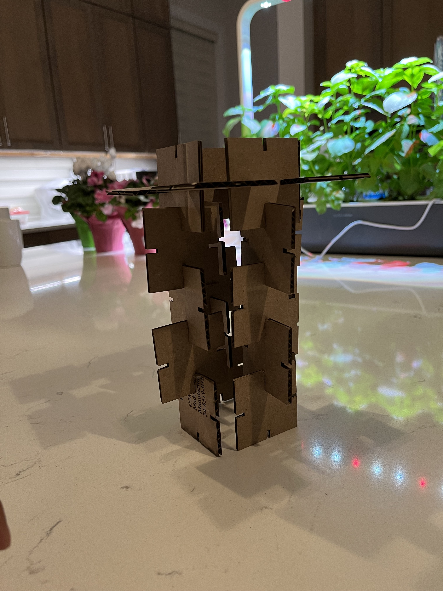

A2: Grasshoper
Click on the images below to download the rhino file and grasshoper file:


For this assignment I wanted to make a lamp based on a video game item called a star fragment from the video game animal crossing. I got an STL from the this website: https://www.printables.com/model/231726-star-fragment-like-in-animal-crossing-new-horizons.
I went to home depot and bought a LED lightbulb that can change colors via bluetooth connection with your phone. I made sure the base was the correct one being a medium/standard base, and measured the size bulb. I also wanted to have a standing lamp, so I bought a basic lamp base off of amazon.

I then imported the star fragment model into rhino. I scaled the star fragment model to have the light bulb to be able to fit it into. Then I reduced the poly count of the mesh. Which is now roughly 500 polygons. I then boolean unioned a cylinder that would guide the lightbulb into the star Fragment.

Using a boolean toggle and attaching it to the vector function, I set it to True which set the lengths of the vectors to one.

Using the amplitude function, I used it to change the length of the vector I'm using for the slots. I set the value at around 0.9 inches.

Using the move function, I created another vector function and connected it via the motion function.

I then proceeded to use the Trim with Regions functions to cut the slits out of the polygon.


Here are my laser cutter settings for when I used the mill's laser cutter.

Here are the shapes cut out and put together.
 
